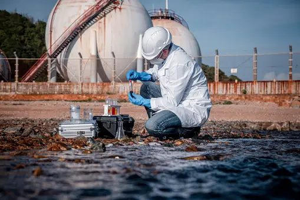
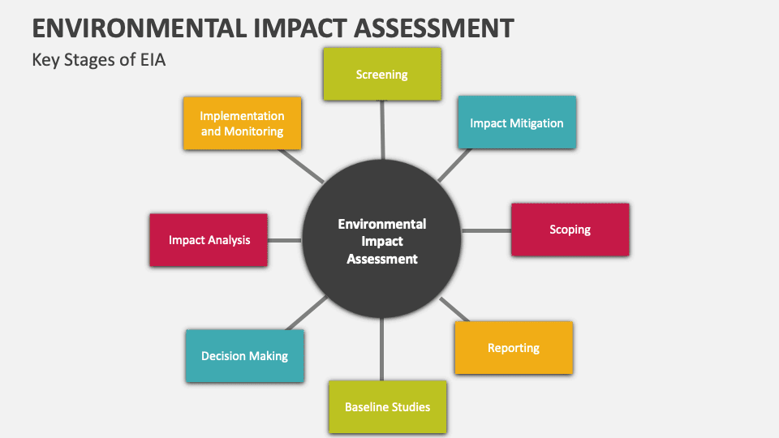
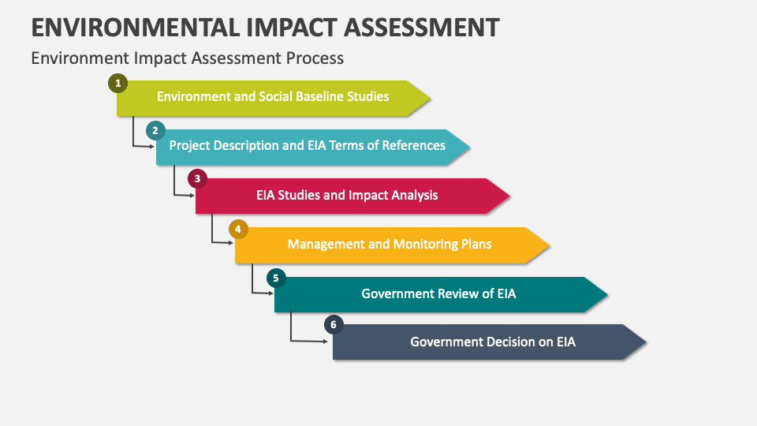
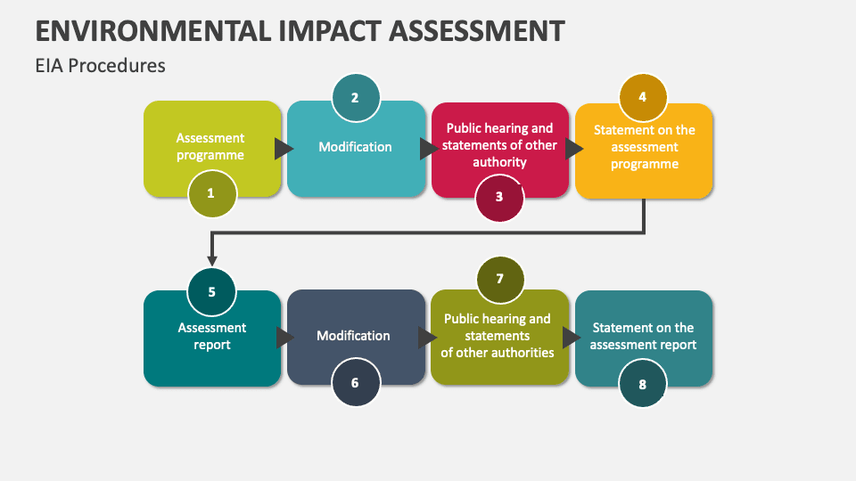
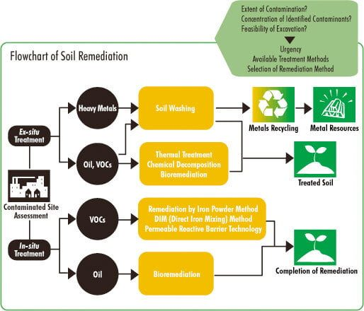
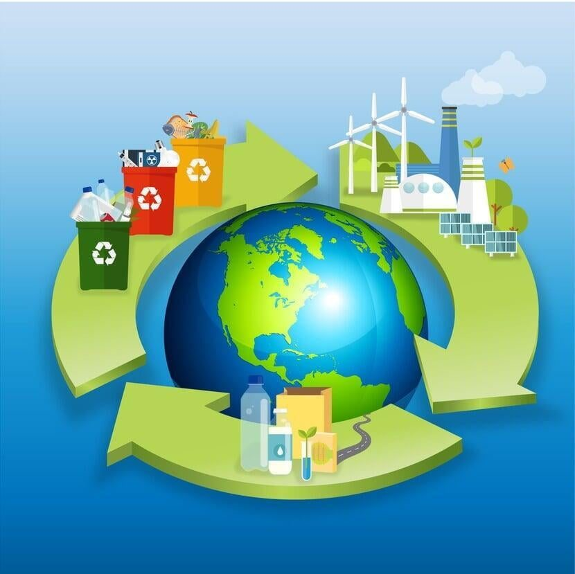
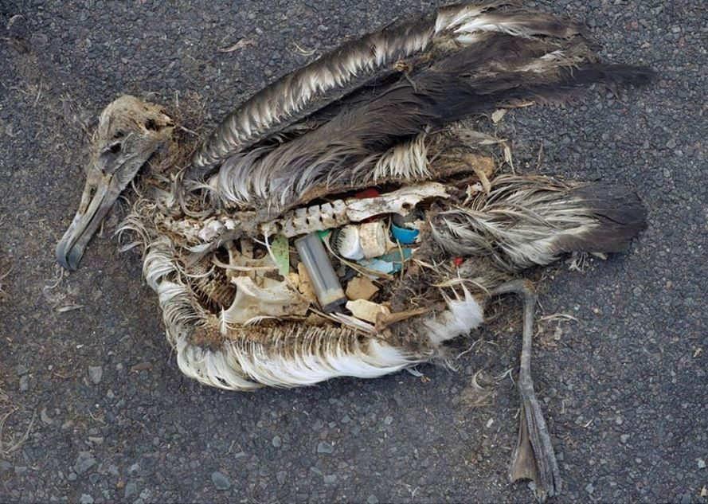
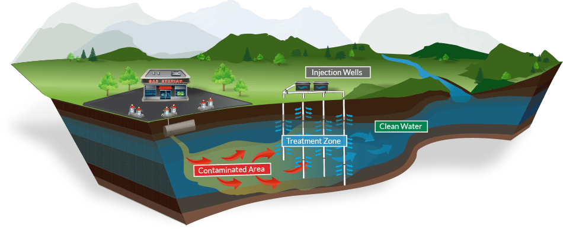

Consultancy services
Find your potential solution for an environmental problem.
From impact assessment through remediation and modelling — the full consultancy scope EMG has delivered since 1999.
Services register
What we are engaged to do.
- 01Environmental & Social Impact Assessment (ESIA)Scoping through baseline studies, checklists, matrices and network diagrams. These techniques collect and present knowledge so that logical decisions can be made about which impacts are most significant.
- 02Environmental & Social Action Plans (IFC)Action plans structured against IFC Performance Standards, written to survive lender and regulator scrutiny.
- 03Social Management
- 04Site CharacterisationInvestigation and delineation of contamination across soil, groundwater, sediment and surface water.
- 05Waste Management & Waste-to-Energy
- 06Environmental RemediationRemoval of pollution and contaminants from environmental media, supported by laboratory analysis and monitoring.
- 07Pollution Control
- 08Modelling — air dispersion, microclimate and heat waste
- 09Climate Change Risk Assessment
Engineering key expertise
Design is only credible when it is verified.
EMG couples treatment process design with hydraulic and dynamic simulation, CFD, physical modelling and formal risk study, so that performance is demonstrated before it is built.
Treatment & conveyance
- Water and wastewater treatment systems
- Pumping systems
- Process design
- Hydraulics
- Pilot plants and retrofitting
Modelling & simulation
- Dynamic simulation
- CFD modelling
- Physical modelling
- Process simulation
Assurance & risk
- HAZOP studies
- Risk assessment — qualitative and quantitative
- Value engineering
- Environmental control and laboratory analysis
Studies & research
- Research and development, theses supervision
- Feasibility studies
- Institutional studies
- Social and economic studies
Impact assessment
A defined process, not a document exercise.
The main EIA techniques used in scoping are baseline studies, checklists, matrices and network diagrams — presenting information so decisions about significance are defensible.



Applied practice
Remediation, restoration and recovery.
Environmental remediation deals with the removal of pollution or contaminants from environmental media such as soil, groundwater, sediment or surface water.
Ecosystem restoration assists the recovery of ecosystems that have been degraded or destroyed, as well as conserving those still intact — creating the conditions needed for recovery so that plants, animals and microorganisms can carry out the work of recovery themselves.




Have a problem that needs an engineering answer?
Tell us the constraint — capacity, compliance, cost or programme — and we will tell you what can be demonstrated.